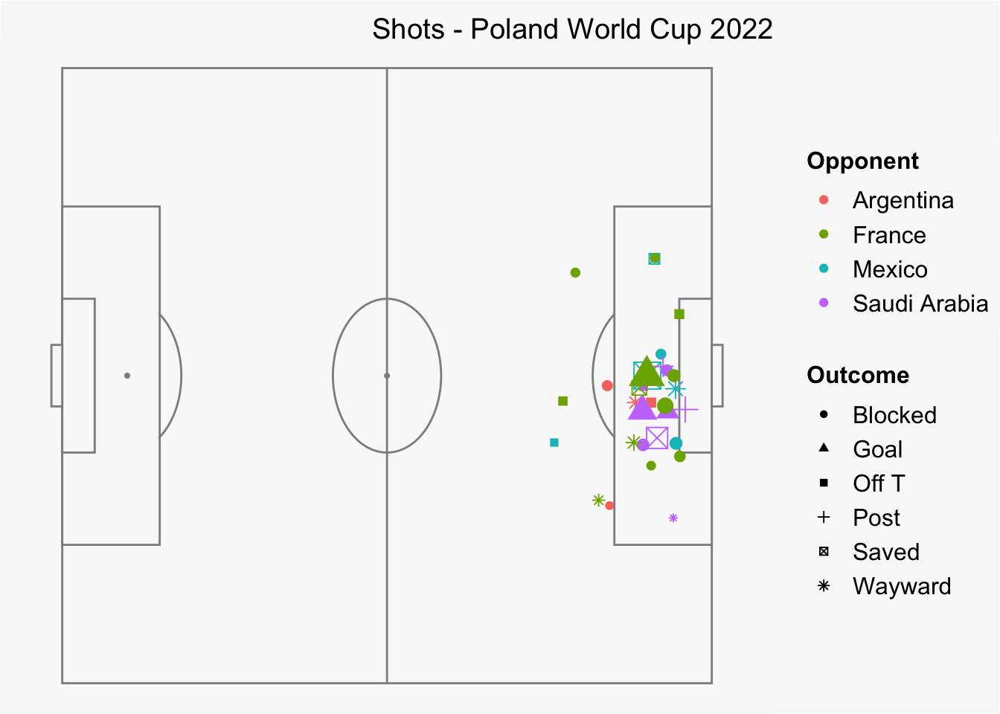

Show the code
library(tidyverse)
library(StatsBombR)
library(ggplot2)
library(SBpitch)
library(forcats)In this document I explore free StatsBomb data from World Cup 2022. I focus on the Polish national team. It is a first time I work with StatsBomb data. My goal is to explore the data and analyze the performance of the team.
Here we load all libraries required to get the data and execute the code in this file.
library(tidyverse)
library(StatsBombR)
library(ggplot2)
library(SBpitch)
library(forcats)Select World Cup 2022 (id 43) and events related to only Polish team.
This script can be used to analyze other teams too.
team_to_analyze = "Poland" # specify a team
d <- FreeCompetitions() %>% # load all competitions
filter(competition_id == 43 & season_name == 2022) %>% # select World Cup 2022
FreeMatches() %>% # load all matches
filter(home_team.home_team_name == team_to_analyze | away_team.away_team_name == team_to_analyze) %>% # select matchs of Polish team
free_allevents(Parallel = T) %>% #load all events
allclean() # calculate additional variables from existings ones (StatsBomb function to improve dataset)[1] "Whilst we are keen to share data and facilitate research, we also urge you to be responsible with the data. Please credit StatsBomb as your data source when using the data and visit https://statsbomb.com/media-pack/ to obtain our logos for public use."
[1] "Whilst we are keen to share data and facilitate research, we also urge you to be responsible with the data. Please credit StatsBomb as your data source when using the data and visit https://statsbomb.com/media-pack/ to obtain our logos for public use."
[1] "Whilst we are keen to share data and facilitate research, we also urge you to be responsible with the data. Please credit StatsBomb as your data source when using the data and visit https://statsbomb.com/media-pack/ to obtain our logos for public use."# create a data frame that has info about opponents of chosen team
d_opponents <- FreeCompetitions() %>% # load all competitions
filter(competition_id == 43 & season_name == 2022) %>% # select World Cup 2022
FreeMatches() %>% # load all matches
filter(home_team.home_team_name == team_to_analyze | away_team.away_team_name == team_to_analyze) %>% # select matchs of Polish team
select(match_id, match_date, home_team.home_team_name, away_team.away_team_name) %>%
distinct() %>% # select only relevant variables
mutate(opponent = case_when(home_team.home_team_name == team_to_analyze ~ away_team.away_team_name,
away_team.away_team_name == team_to_analyze ~ home_team.home_team_name)) # create a new variable that will contain info who was an opponent in each game[1] "Whilst we are keen to share data and facilitate research, we also urge you to be responsible with the data. Please credit StatsBomb as your data source when using the data and visit https://statsbomb.com/media-pack/ to obtain our logos for public use."
[1] "Whilst we are keen to share data and facilitate research, we also urge you to be responsible with the data. Please credit StatsBomb as your data source when using the data and visit https://statsbomb.com/media-pack/ to obtain our logos for public use."#merge both datasets to have info about the opponent for each event
d <- inner_join(d, d_opponents, by="match_id")First I look at all shots of Polish team.
Each color represents different opponent and the size of the shot location represents xG (statsbomb).
create_Pitch(goaltype = "box") +
geom_point(data = d[d$team.id == 789 & d$type.id == 16,], aes(x = location.x, y = location.y,
colour = opponent,
size = shot.statsbomb_xg)) +
ggtitle("Shots - Poland World Cup 2022") +
labs(colour = "Opponent") +
guides(size = "none") +
theme(legend.position = c(0.12, 0.9),
plot.title = element_text(hjust = 1,vjust = -2),
plot.background = element_rect(fill = "#F9F9F9"))
Then let’s have a look who shot the most often and who accumalted the highest xG.
d_shots_players <- d %>%
filter(team.id == 789) %>% # select Poland
group_by(player.name, na.rm = TRUE) %>% # group for each player
summarise(shots = sum(type.name=="Shot", na.rm = TRUE), # amount of shots per player
goals = sum(shot.outcome.name=="Goal", na.rm = TRUE), # amount of goals per player
shots_per_game = sum(type.name=="Shot", na.rm = TRUE)/n_distinct(match_id), # shots per game per player
goals_per_game = sum(shot.outcome.name=="Goal", na.rm = TRUE)/n_distinct(match_id), # goals per game per player
xG = sum(shot.statsbomb_xg, na.rm = TRUE), #xG per player
xG_per_game = sum(shot.statsbomb_xg, na.rm = TRUE)/n_distinct(match_id),
games = n_distinct(match_id)) # xG per player per game
d_shots_players <- d_shots_players[d_shots_players$shots != 0,]
# plot shots per player
ggplot(data = d_shots_players,
aes(x = reorder(player.name, shots), y = shots)) +
geom_bar(stat = "identity", width = 0.5) +
ggtitle("Shots per player") +
scale_y_continuous( expand = c(0,0), breaks = 1:max(d_shots_players$shots)) +
coord_flip() +
theme_bw() +
theme(axis.title.y = element_blank(),
axis.title.x = element_blank())# plot xG per player
ggplot(data = d_shots_players,
aes(x = reorder(player.name, xG), y = xG)) +
geom_bar(stat = "identity", width = 0.5) +
ggtitle("xG per player") +
scale_y_continuous( expand = c(0,0), breaks = 0:max(d_shots_players$xG)) +
coord_flip() +
theme_bw() +
theme(axis.title.y = element_blank(),
axis.title.x = element_blank())